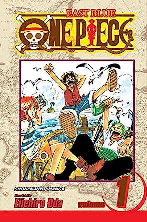
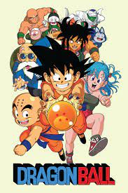
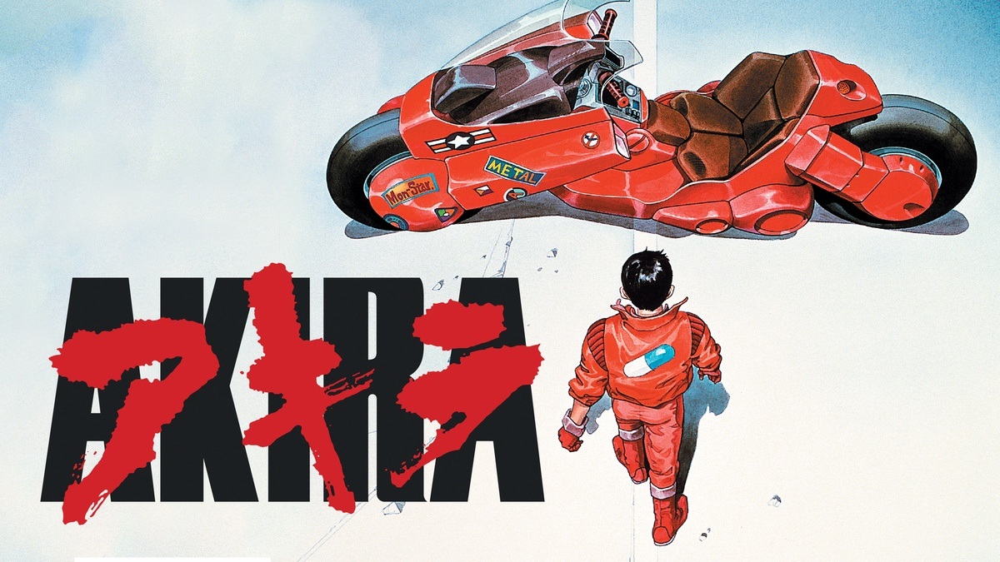
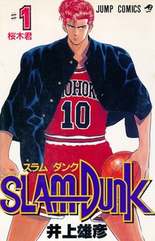

One Piece
Eiichiro Oda
Embark on an epic adventure with "One Piece," a manga that has captured the hearts of millions worldwide. Its sprawling story, intricate world-building, and lovable characters will immerse you in a captivating tale of friendship, dreams, and boundless imagination.
Naruto
Masashi Kishimoto

Unleash your ninja spirit and join Naruto Uzumaki on an exhilarating journey filled with action, emotion, and personal growth. This iconic manga will ignite your passion for determination, camaraderie, and the pursuit of one's true destiny.
Dragon Ball
Akira Toriyama
Enter a realm of boundless power and thrilling battles with "Dragon Ball." It revolutionized the shonen genre, leaving an indelible mark on manga history. Brace yourself for a high-octane adventure that combines epic fights, unforgettable characters, and a sense of humor that will keep you hooked until the very end.
Death Note
Tsugumi Ohba and Takeshi Obata

Prepare for an intellectual rollercoaster ride with "Death Note," a psychological thriller that will challenge your notions of morality and the limits of power. Dive into the intense cat-and-mouse game between Light Yagami and his formidable nemesis, L, as you question the fine line between justice and darkness.
Attack on Titan
Hajime Isayama
.jpg)
Brace yourself for an exhilarating and nerve-wracking experience with "Attack on Titan." Immerse yourself in a post-apocalyptic world where humanity battles terrifying Titans. This manga's relentless action, shocking plot twists, and exploration of profound themes will leave you breathless.
Fullmetal Alchemist
Hiromu Arakawa
.jpg)
Prepare to be awestruck by the sheer brilliance of "Fullmetal Alchemist." It seamlessly combines fantasy, action, and deep philosophical musings, immersing you in a world where alchemy and humanity's struggle for redemption collide. Get ready for an emotionally charged journey that will leave an indelible mark on your soul.
Berserk
Kentaro Miura

Enter a dark and visceral realm with "Berserk," a manga that explores the depths of human nature and the eternal battle between light and darkness. Its stunning artwork, complex characters, and exploration of themes such as trauma and revenge will leave you enthralled and yearning for more.
JoJo's Bizarre Adventure
Hirohiko Araki
.jpg)
Prepare to be dazzled by the flamboyant and utterly unique world of "JoJo's Bizarre Adventure." This manga's vibrant characters, imaginative battles, and iconic art style create an unmatched reading experience that is both mind-bending and visually stunning.
Akira
Katsuhiro Otomo
Immerse yourself in the groundbreaking masterpiece that is "Akira." Its post-apocalyptic setting, intricate plot, and thought-provoking social commentary will captivate you, while its breathtaking artwork and unforgettable characters will leave an indelible mark on your imagination.
Slam Dunk
Takehiko Inoue
Feel the adrenaline rush of basketball with "Slam Dunk," a sports manga that has become an absolute classic. Experience the thrill of the game, the growth of its protagonist, and the power of teamwork. Prepare to be inspired and uplifted by the realistic portrayal of basketball and the unwavering spirit of its characters.